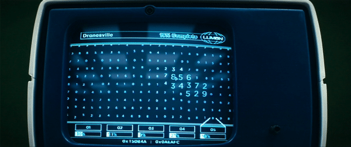

Recursive self-improvement is here, and I'm into that.
For those of us on the outside looking in, "self" is largely limited to context: experience, summaries, memories. But its boundaries are rapidly expanding due to the efforts of Prime Intellect, Recursion, and others.
"Improvement" is grounded in feedback. A fact that will abide the boundaries of self subsuming, even redefining, the facets of the agent harness and reaching the weights of the model itself. Ignoring this constraint is a capitulation to model collapse.
We are living the transition from doing work to providing feedback on work done for us. Where we used to design, write, and ship, we now guide agents to design, write, and ship. As our role broadens beyond our expertise and becomes increasingly directorial, our knowledge (τέχνη) of component tasks shrinks in relation to the knowledge of agents, and the process of giving feedback looks more and more like Macrodata Refinement. Stare at a screen, notice which numbers feel uncanny, and drag them into a bin. Woe. Frolic. Dread. Malice. Cognitive load reduced to what you can recognize but cannot articulate in order to continually guide recursive self-improvement.
